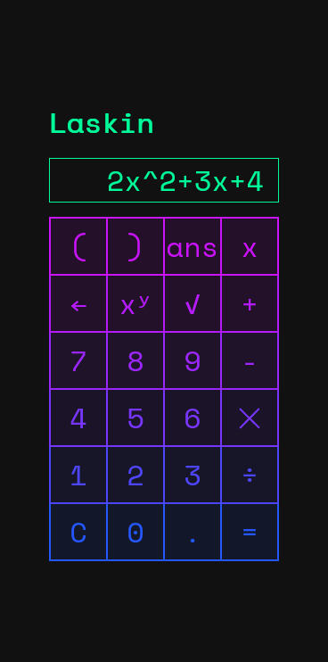

Laskin
HTML
- Toteuta käyttöliittymä laskimelle
- Alusta HTML dokumentti ja lisää seuraavat elementit bodyyn
- Lisää halutessasi pääotsikko Laskin
- Lisää tyhjä header-elementti, jolla on id screen
- Lisää headerin alle section jolla on id buttons
- Lisää sectionin sisään taulukko, jossa on painikkeet
- Voit käyttää erikoismerkeissä HTML Entityjä
- Lisää style.css ja linkitä se headiin
CSS
- Määrittele teemavärit halutessasi muuttujina CSS:n root osioon
- Etsi Google Fontsista sopiva fontti esim. monospace tyylinen,
jossa jokainen merkki vie saman verran tilaa - Käytä fonttia bodyssä
- Määrittele teemavärit halutessasi muuttujina CSS:n root osioon
- Keskitä laskin asettamalla esim. bodylle display: flex; ja justify-content: center;
- Rajoita manin maksimileveys 260px
- Aseta taustavärit ja tesktien värit
- Aseta *{...} kaikille elementeille box-sizing: border-box;
- Aseta taulukon soluille (table td) reunaviiva (border)
- Säädä nappien taustaväriä (background-color) ja reunanväriä (border-color)
- Muuta nappien väriä tai kirkkautta (backdrop-filter: brightness) hover-tilassa
- Tallenna muutokset GitHubiin ja päivitä etusivun harjoituslista

Muuta hifistelyä jos ehtii ja kiinnostaa
- Tee animaatio, joka vaihtaa napin taustaväriä sekä reunuksen väriä
- Codepen.io ssa on hyviä malleja
- Viivästytä kunkin rivin animaatiota esim. 100ms enemmän kuin edellisen,
jolloin saat aikaan gradienttina vaihtuvan värin
Laskimen ei tarvitse toimia oikeasti, mutta jos kuitenkin haluat niin
- Koodaa laskimen toiminnot JavaScriptillä ja linkitä JS tiedosto headiin
- tai lataa calc.js ja linkitä se headiin
- Käynnistä funktio init() script tagissa ennen bodyn sulkeutumista
- Laskin tarvitsee myös mathjs-kirjaston, joten lataa se kohdasta
math.js (version 11.3.2, 191 kB, minified and gzipped) ja linkitä headiin - Tallenna muutokset GitHubiin